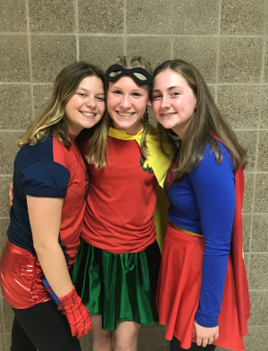

About Me
My name is Kate Bartz. I am a junior in advanced computer science at Rosemount High School, and I took AP comp sci last year as a sophomore. I have an older brother Chris and a younger sister Ainsley. I also have a dog named Reba. I swim on the high school swim team and a club team called blackline. Over the summer, I worked as a lifeguard at Cascade Bay water park, I swam at meets and I spent time with friends and family.
